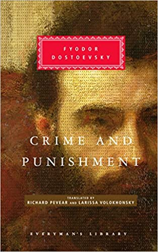

|  | 1866 Crimă și pedeapsă Scris în același timp cu „Jucătorul”, romanul descrie un tânăr intelectual, Raskolnikov, dispus să parieze pe idei. El decide să-și rezolve toate problemele dintr-o lovitură, ucigând o bătrână amanet. Motivele și teoriile contradictorii îl atrag toate la crimă. Moralitatea utilitara sugerează că uciderea ei este un bine pozitiv, deoarece banii ei ar putea fi folosiți pentru a-i ajuta pe mulți alții. Pe de altă parte, Raskolnikov argumentează credința în bine și în rău ca fiind ea însăși o prejudecată pură, o simplă relicvă a religiei și că, moral vorbind, nu există crimă. Cea mai faimoasă teorie a sa care justifică crima împarte lumea în oameni extraordinari, cum ar fi Solon, Cezar și Napoleon, și oameni obișnuiți, care pur și simplu servesc la propagarea speciei. Oamenii extraordinari, teoretizează el, trebuie să aibă „dreptul de a transgresa”, altfel progresul ar fi imposibil. Nimic mai departe de propria morală a lui Dostoievski, bazată pe valoarea infinită a fiecărui suflet uman, decât această teorie napoleonică, pe care Dostoievski a văzut-o drept conținutul real al credinței intelectualității. |
FILM